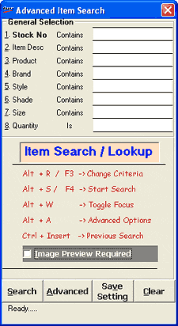
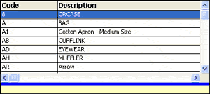
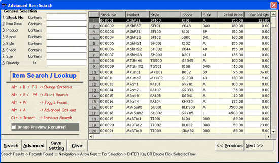
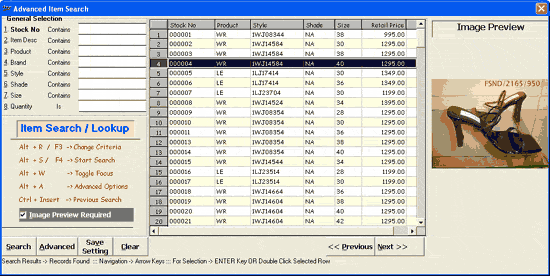
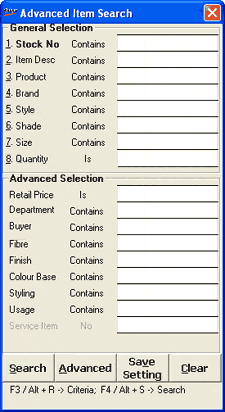

Flexibility in browsing item details based on its attributes helps to avoid the time consuming manual search. Advanced Item Search enables you to identify the stock number of an item efficiently.
The Advanced Item Search window is as shown.

General Selection: Enter the relevant values in the respective fields for the required item search. The fields are Stock No, Item Desc, Product, Brand, Style, Shade, Size and Quantity.
Note: In some of the fields related to the Item Classification, say, Product, you can press F2 again to list the catalogued values to select from.
A sample set of values for the Item Classification, Product is shown.

Search: Click to view the details of all the items matching the provided search criteria. Alternatively, press F4 or Alt+S to view the same details. Select the required item and press Enter.
A sample item list is as shown.

Press Alt+R or F3, to change the criteria used for any of the parameters, if required. For example, the parameter Quantity under General Selection, is provided with three criteria, namely; Greater Than, Is and Less Than. You can change to any of the criteria by pressing Alt+R or F3 when the cursor is placed in Quantity field.
Image Preview Required: Select to display the image of the item, if available in the item master. This feature is used for cross verification of the item being billed and the item numbers are displayed. This option may be used while dealing with high value items.
A sample of the Advanced Item Search window, with the associated item image is as shown.

To zoom in or zoom out on the item image, click the image. The Image Viewer window is displayed to zoom in and zoom out on the image.
Advanced: Click this option to display additional filter conditions to refine the item search further. Alternatively, press Alt+A to display the same additional filter conditions.
The Advanced Item Search window with Advanced Selection criteria is as shown.

Advanced Selection: Enter the relevant values in the respective fields for the required item search. The fields are Retail Price, Department, Buyer, Fibre, Finish, Colour Base, Styling, Usage and Service Item (for Service Billing).
Save Setting: To save the filter conditions last used. These filter conditions will be automatically displayed while using the browser again. This feature is useful when you use the same filter criteria repeatedly. In case you have to change the filter conditions, click on Clear, provide new conditions and click Search. For the next search, the last saved settings are available.
Clear: To clear the entered selection criteria.
Press Enter or double click on the item to be selected.
Note: In an item search, if you want the list of items obtained in the previous search, press Ctrl+Insert in the Advanced Item Search window.